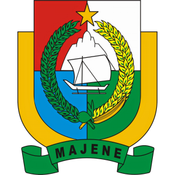
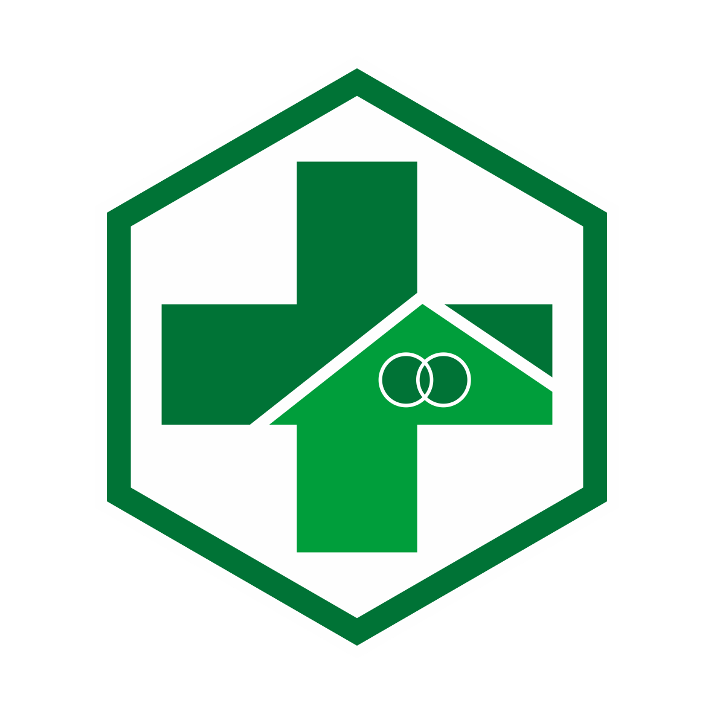

Dinas Kesehatan Kabupaten Majene - TA 2026

Akses ruang pertemuan daring untuk Hari 1 & Hari 2
Modul, bahan tayang narasumber, dan panduan kegiatan
Formulir presensi harian untuk peserta
Pengumpulan Rencana Tindak Lanjut per Puskesmas
Panduan dan peraturan selama mengikuti kegiatan daring
Unduh sertifikat kegiatan (Akses dibuka setelah acara)